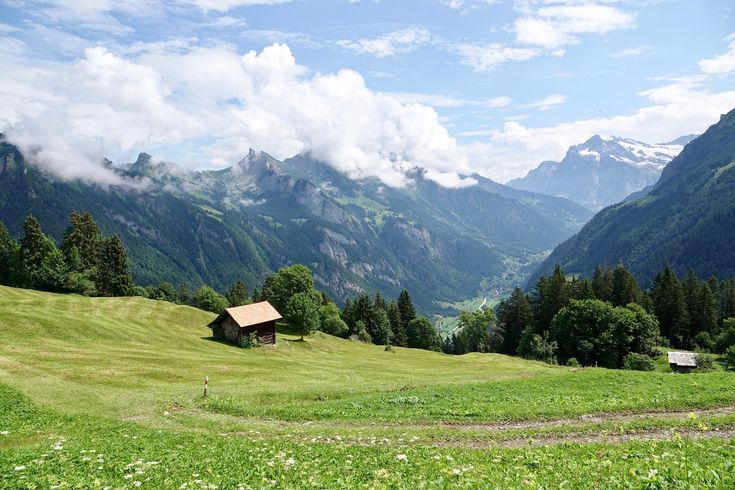
spring: going up
Cows walk from the valley barns up to the mountain pastures. This trip is called the Almauftrieb.
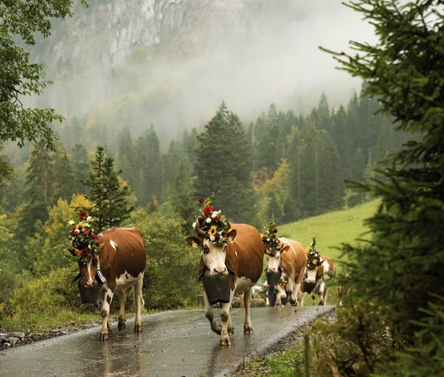
An Alpine tradition of flower crowns, cowbells and a whole-village party.
Every fall, cows in the Alps take a big walk downhill. They've spent all summer munching grass on the mountaintops, and now it's time to go home for winter.
Every summer, almost a million cows head up to the mountains to graze. That's a lot of cowbells!
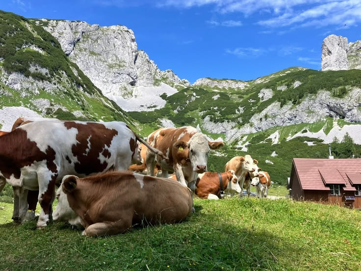

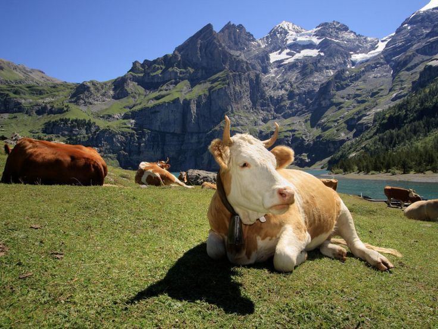
Hundreds of mountain villages hold their own Almabtrieb every fall. Here are some of the best-known ones.
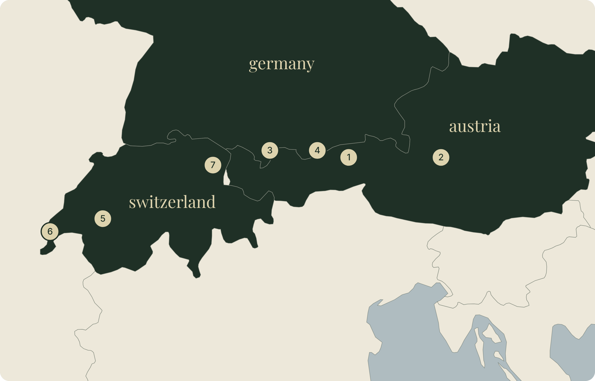
Tyrol, Austria · one of Austria's biggest, with a farmers' market
Styria, Austria
Allgäu, Germany · about 1,000 animals come down
Bavaria, Germany · village party and farmers' market
Gruyère, Switzerland · the country's best-known désalpe
Vaud, Switzerland · hundreds of cows trot through the village
Appenzell, Switzerland
Festival towns from regional tourism sites.

Cows walk from the valley barns up to the mountain pastures. This trip is called the Almauftrieb.
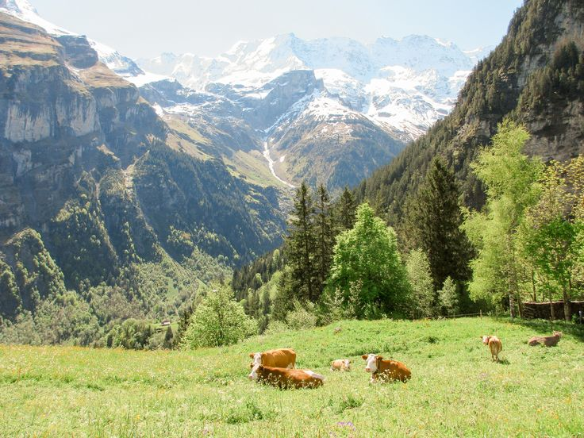
All summer, the herds munch fresh mountain grass, sometimes moving from one pasture to the next.
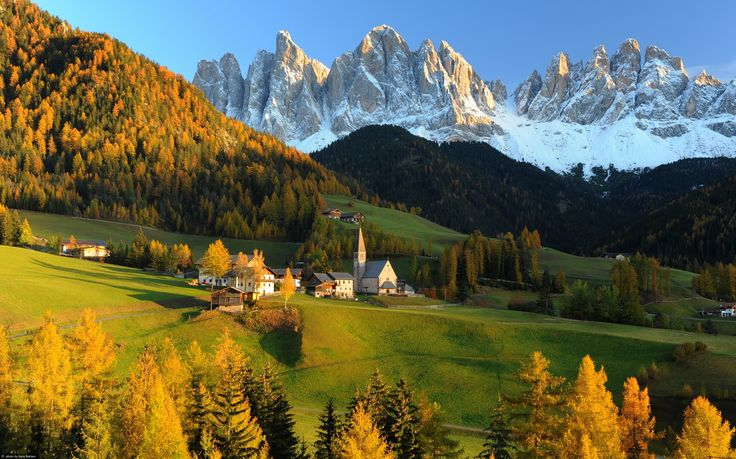
The whole herd walks back down to the valley together. This is the Almabtrieb!
Cows from lots of different farms share the same pasture. Back in the valley, they're sorted at the Viehscheid so each cow goes home to its own farmer.
If the summer on the mountain went by with no accidents, the cows get dressed up for the trip home.
They wear big, colorful headdresses with flowers, ribbons and bells. A flower crown means everyone made it through the summer safe and sound.
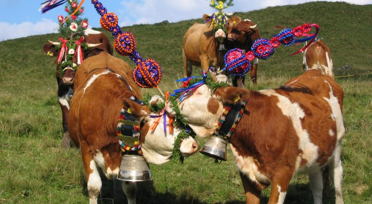
When the cows reach town, everyone celebrates with music, feasts and dancing. In some places the parade has become a huge festival, with stalls along the route selling farm food and handmade crafts.
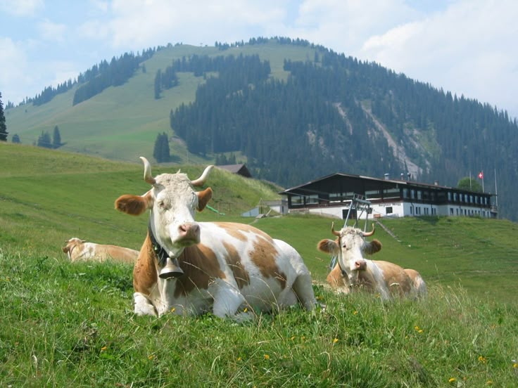

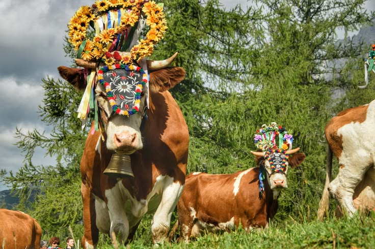
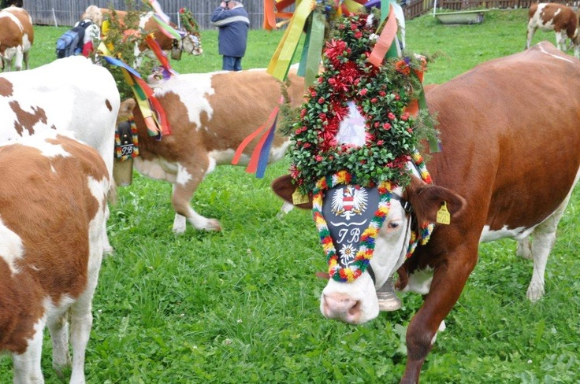
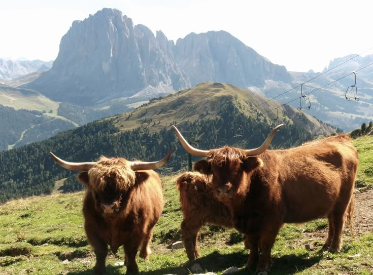
Depending on where you are in the Alps, people call the cows' trip by different names.
Bonus word: the summer pastures are called Almen in Austria and Germany, and Alpen in Switzerland.
Moving animals to fresh grass with the seasons is called transhumance. Almabtrieb has cousins in other places too!
Poland
A lot like Almabtrieb, but with sheep instead of cows.
Idaho, USA
Sheep take over the town as they move to their winter pastures.
Turkey & Central Asia
The name for the high summer pastures where herders take their animals.